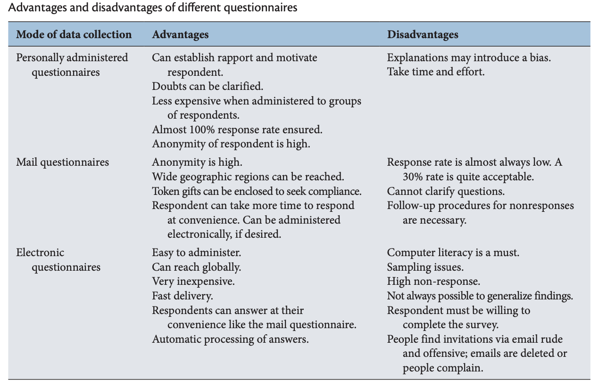
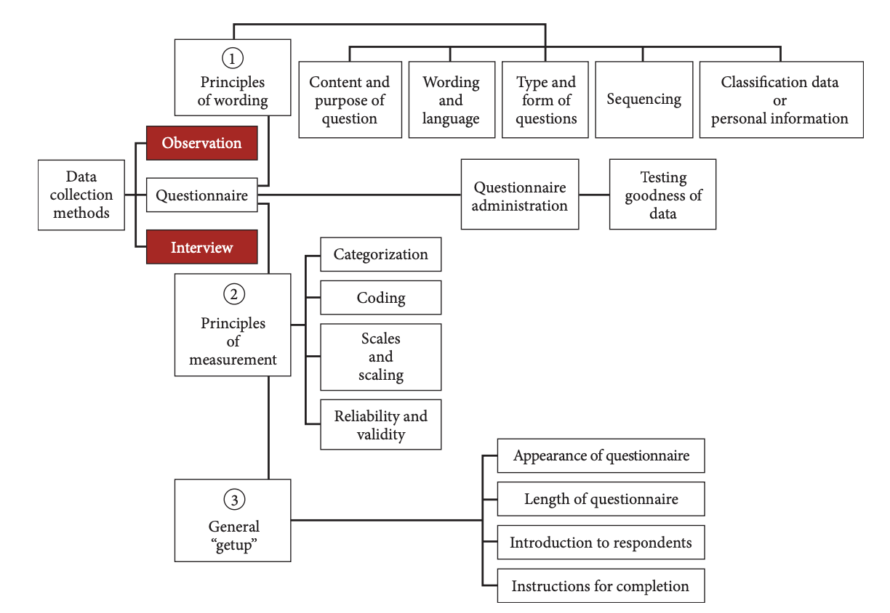

5 Questionnaire Design
A questionnaire is a preformulated written set of questions to which respondents record their answers, usually within rather closely defined alternatives.
5.1 Designing a questionnaire
Designing the questionnaire is the most important stage in this type of research because once the questionnaire is designed you have determined the questions and the answers and you will not be able to go back and get further information. You need to be sure that the questions you ask are going to enable you to gather the data that you need – here you need to refer back to your operational definitions. How do you ask a set of questions that will show you whether a person is happy or not? Or has had a ‘good’ holiday? Or even whether they have really eaten what they said they have eaten?
Designing a questionnaire is both about working out how you are going to measure the presence of something and about the practicalities of finding a set of questions and answers that will enable you to do that and be meaningful to and answerable by all your respondents.
Thinking about your research topic and designing a questionnaire to gather data:
- What do you want to know?
- Who will be able to answer the questions?
- Will they understand the questions?
- How will they answer the questions?
- Will they be able to give the answers they want to give?
5.2 Different types of data
A questionnaire is usually designed to collect a number of different types of data including:
facts – about people or events;
descriptions – people’s descriptions about something that, for example, has happened to them;
knowledge – what people know about something;
opinions – what their opinion is about something they have experienced or know about;
attitudes/values – their attitudes towards other people, institutions, ideas and so on;
background information about the respondent which may be linked to the research topic.
5.3 Different types of answer
Questionnaires include ways of answering questions as well as ways of asking them. The two are clearly linked – the way the question is asked will determine the range of answers the respondent has to choose from. While this may seem obvious, it may not be immediately apparent that when designing the questionnaire you need to have the data you will gather in mind as well as the questions you have to ask to get that data. The nature of the data you gather will determine how you are able to work with it when you come to analyse it. These are the main types of answer – or data – you will get from a questionnaire:
quantity – number of times, number of brothers, etc.;
category – age category, e.g. 16–25 years; job category, e.g. manual worker;
answers chosen from a list of possible answers, e.g. yes/no/don’t know;
position on a scale – for example, from ‘very satisfied’ to ‘very unsatisfied’;
rank position – for example, your first choice, your second choice, etc.;
open data – answers in respondents’ own words.
5.4 Types of question
There are different ways of asking almost any question. The following are just some of the most commonly used questions in questionnaires.
5.4.1 Yes/No
The most simple question asks for a ‘yes’ or ‘no’ response and is used as a way of distinguishing between different groups of respondents. Basically there is no point in asking a yes/no question if all your respondents are likely to answer one or the other unless you are using it as a check question to ensure that you have the respondents you want. All of your respondents should be able to answer ‘yes’ or ‘no’ but it is sometimes advisable to add a ‘don’t know’ or ‘not applicable’ category for any respondents who are unable to answer the question. In the example below it could be that the respondent has not been at home for the last six months because she has been in hospital.
5.4.2 Which category? How many? How much?
You will probably want to ask questions about the respondents themselves or about a situation. This (usually) factual data needs to be collected in a way that makes it easy for the respondent to give the data accurately.
5.4.3 Select from a list: single/multiple choice
If there are a set of answers we want respondents to choose from, it is common to list them and ask them either to select one or more or to ‘tick all that apply’. Think carefully about what information you want from the question. An ‘other’ category is often included so that respondents can add any other answers which they feel do not fit in the categories you have given them to choose from as in the first example below. In the second example this would not be appropriate.
5.4.4 Agree/disagree with a statement: Likert scale
If you want to gather data about people’s ideas, values, opinions or attitudes, you can ask respondents whether they agree or disagree with a statement which you have devised.
5.4.5 Rating scale
Another way of asking about respondents’ opinions or attitudes is to use a rating scale. In this case they are asked to place their answer on a scale which can be from 1 to 5, to 7, or to 9. It is usual to have an odd-numbered scale as this gives respondents the option of choosing the midpoints.
5.4.6 Open question
Sometimes a questionnaire includes questions that allow respondents to answer as they wish. If the questionnaire is self-completion, a box is included for the respondent’s answer and the size of the box is usually an indication to the respondent of the length and detail of their expected answer.
5.5 Types of questionnaire
5.5.1 Personally administered questionnaires
When the survey is confined to a local area a good way to collect data is to personally administer the questionnaires. The main advantage of this is that the researcher or a member of the research team can collect all the completed responses within a short period of time. Any doubts that the respondents might have on any question can be clarified on the spot. The researcher also has the opportunity to introduce the research topic and motivate the respondents to offer their frank answers.
Administering questionnaires to large numbers of individuals at the same time is less expensive and consumes less time than interviewing; equally, it does not require as much skill to administer a questionnaire as it does to conduct interviews. Wherever possible, questionnaires are best administered personally because of these advantages. A disadvantage of personally administered questionnaires is that the researcher may introduce a bias by explaining questions differently to different people; participants may be in fact answering different questions as compared to those to whom the questionnaire was mailed. What’s more, personally administered questionnaires take time and a lot of effort. For this reason, electronic questionnaires are widely used these days.
5.5.2 Mail questionnaires
A mail questionnaire is a self‐administered (paper and pencil) questionnaire that is sent to respondents via the mail. This method has long been the backbone of business research, but with the arrival of the Internet, mobile phones, and social networks, mail questionnaires have become redundant or even obsolete. Instead, online questionnaires are posted on the Internet or sent via email.

5.5.3 Electronic and online questionnaires
The distribution of electronic or online questionnaires is easy and fast. All you have to do is to email the invitations to complete a survey, post a link on a website or personal blog, or use social networks. Online questionnaires are usually created as “web forms” with a database to store the answers and statistical software to provide statistical analysis. Until recently, conducting online surveys was a time‐consuming and tedious task requiring familiarity with web authoring programs, HTML codes, and/or scripting programs. Today, survey development software packages and online survey services make online survey research much easier and more accessible.
5.6 Guidelines for questionnaire design
Sound questionnaire design principles should focus on three areas. The first relates to the wording of the questions. The second refers to the planning of issues with regard to how the variables will be categorized, scaled, and coded after receipt of the responses. The third pertains to the general appearance of the questionnaire. All three are important issues in questionnaire design because they can minimize bias in research. These issues are discussed below.

5.6.1 Reliability and Validity of Measurement
Reliability refers to the consistency of a measure. Psychologists consider three types of consistency: over time (test-retest reliability), across items (internal consistency), and across different researchers (inter-rater reliability).
5.6.1.1 Test-retest reliability
When researchers measure a construct that they assume to be consistent across time, then the scores they obtain should also be consistent across time. Test-retest reliabiliy is the extent to which this is actually the case. For example, intelligence is generally thought to be consistent across time. A person who is highly intelligent today will be highly intelligent next week. This means that any good measure of intelligence should produce roughly the same scores for this individual next week as it does today. Clearly, a measure that produces highly inconsistent scores over time cannot be a very good measure of a construct that is supposed to be consistent.
Assessing test-retest reliability requires using the measure on a group of people at one time, using it again on the same group of people at a later time, and then looking at between the two sets of scores. This is typically done by graphing the data in a scatterplot and computing Pearson’s r. A high correlation implies reliability.
Again, high test-retest correlations make sense when the construct being measured is assumed to be consistent over time, which is the case for intelligence, self-esteem, and the Big Five personality dimensions. But other constructs are not assumed to be stable over time. The very nature of mood, for example, is that it changes. So a measure of mood that produced a low test-retest correlation over a period of a month would not be a cause for concern.
5.6.1.2 Internal reliability
A second kind of reliability is internal consistency, which is the consistency of people’s responses across the items on a multiple-item measure. In general, all the items on such measures are supposed to reflect the same underlying construct, so people’s scores on those items should be correlated with each other. On the Rosenberg Self-Esteem Scale, people who agree that they are a person of worth should tend to agree that that they have a number of good qualities. If people’s responses to the different items are not correlated with each other, then it would no longer make sense to claim that they are all measuring the same underlying construct. This is as true for behavioural and physiological measures as for self-report measures. For example, people might make a series of bets in a simulated game of roulette as a measure of their level of risk seeking. This measure would be internally consistent to the extent that individual participants’ bets were consistently high or low across trials.
Like test-retest reliability, internal consistency can only be assessed by collecting and analyzing data. One approach is to look at a split-half correlation. This involves splitting the items into two sets, such as the first and second halves of the items or the even- and odd-numbered items. Then a score is computed for each set of items, and the relationship between the two sets of scores is examined. A split-half correlation of .80 or greater is generally considered good internal consistency.
Perhaps the most common measure of internal consistency used by researchers in psychology is a statistic called Cronbach’s alpha. Conceptually, alpha is the mean of all possible split-half correlations for a set of items. For example, there are 252 ways to split a set of 10 items into two sets of five. Cronbach’s alpha would be the mean of the 252 split-half correlations. Note that this is not how alpha is actually computed, but it is a correct way of interpreting the meaning of this statistic. Again, a value of .80 or greater is generally taken to indicate good internal consistency.
5.6.1.3 Interrater Reliability
Many behavioural measures involve significant judgment on the part of an observer or a rater. Inter-rater reliability is the extent to which different observers are consistent in their judgments. For example, if you were interested in measuring university students’ social skills, you could make video recordings of them as they interacted with another student whom they are meeting for the first time. Then you could have two or more observers watch the videos and rate each student’s level of social skills. To the extent that each participant does in fact have some level of social skills that can be detected by an attentive observer, different observers’ ratings should be highly correlated with each other.
Interrater reliability is often assessed using Cronbach’s alpha when the judgments are quantitative or an analogous statistic called Cohen’s kappa when they are categorical.
5.6.2 Validity
Validity is the extent to which the scores from a measure represent the variable they are intended to. But how do researchers make this judgment? We have already considered one factor that they take into account-reliability. When a measure has good test-retest reliability and internal consistency, researchers should be more confident that the scores represent what they are supposed to. There has to be more to it, however, because a measure can be extremely reliable but have no validity whatsoever. As an absurd example, imagine someone who believes that people’s index finger length reflects their self-esteem and therefore tries to measure self-esteem by holding a ruler up to people’s index fingers. Although this measure would have extremely good test-retest reliability, it would have absolutely no validity. The fact that one person’s index finger is a centimetre longer than another’s would indicate nothing about which one had higher self-esteem.
5.6.3 Principles of wording
The principles of wording refer to such factors as:
- The appropriateness of the content of the questions.
- How questions are worded and the level of sophistication of the language used.
- The type and form of questions asked.
- The sequencing of the questions.
- The personal data sought from the respondents. Each of these is explained below.
5.6.3.1 Content and purpose of the questions
The nature of the variable tapped – subjective feelings or objective facts – will determine what kinds of questions are asked. If the variables tapped are of a subjective nature (e.g., satisfaction, involvement), where respondents’ beliefs, perceptions, and attitudes are to be measured, the questions should tap the dimensions and elements of the concept. Where objective variables, such as age and educational levels of respondents, are tapped, a single direct question – preferably one that has an ordinal scaled set of categories – is appropriate. Thus, the purpose of each question should be carefully considered so that the variables are adequately measured and yet no superfluous questions are asked.
5.6.3.2 Language and wording of the questionnaire
The language of the questionnaire should approximate the level of understanding of the respondents. The choice of words will depend on their educational level, the usage of terms and idioms in the culture, and the frames of reference of the respondents. For instance, even when English is the spoken or official language in two cultures, certain words may be alien to one culture. Terms such as “working here is a drag” and “she is a compulsive worker” may not be interpreted the same way in different cultures. Some blue‐collar workers may not understand terminology such as “organizational structure.” Thus, it is essential to word the questions in a way that can be understood by the respondent. If some questions are either not understood or are interpreted differently by the respondent, the researcher will obtain the wrong answers to the questions, and responses will thus be biased. Hence, the questions asked, the language used, and the wording should be appropriate to tap respondents’ attitudes, perceptions, and feelings.
5.6.3.3 Type and form of questions
The type of question refers to whether the question is open‐ended or closed. The form of the question refers to whether it is positively or negatively worded.
- Open-ended versus closed questions Open‐ended questions allow respondents to answer them in any way they choose. An example of an open‐ended question is asking the respondent to state five things that are interesting and challenging in the job.
Another example is asking what the respondents like about their supervisors or their work environment. A third example is to invite their comments on the investment portfolio of the firm.
A closed question, in contrast, asks the respondents to make choices among a set of alternatives given by the researcher. For instance, instead of asking the respondent to state any five aspects of the job that she finds interesting and challenging, the researcher might list 10 or 15 aspects that might seem interesting or challenging in jobs and ask the respondents to rank the first five among these in the order of their preference. All items in a questionnaire using a nominal, ordinal, Likert, or ratio scale are considered closed.
Closed questions help the respondents to make quick decisions to choose among the several alternatives before them. They also help the researcher to code the information easily for subsequent analysis. Care has to be taken to ensure that the alternatives are mutually exclusive and collectively exhaustive. If there are overlapping categories, or if all possible alternatives are not given (i.e., the categories are not exhaustive), the respondents might get confused and the advantage of their being enabled to make a quick decision is thus lost.
Some respondents may find even well‐delineated categories in a closed question rather confining and might avail themselves of the opportunity to make additional comments. This is the reason why many questionnaires end with a final open‐ended question that invites respondents to comment on topics that might not have been covered fully or adequately. The responses to such open‐ended questions have to be edited and categorized for subsequent data analysis.
- Positively and negatively worded questions Instead of phrasing all questions positively, it is advisable to include some negatively worded questions as well, so the tendency in respondents to mechanically circle the points toward one end of the scale is minimized.
For example, let us say that a set of six questions is used to tap the variable “perceived success” on a five‐point scale, with 1 being “very low” and 5 being “very high” on the scale. A respondent who is not particularly interested in completing the questionnaire is more likely to stay involved and remain alert while answering the questions when positively and negatively worded questions are interspersed in it.
A set of example to start with is as follows.
A positively framed question can be:
“Should protests of pandemic-related restrictions be allowed?”
A negatively framed approach of the same question can be,
“Should protests of pandemic-related restrictions be forbidden?”
For instance, if the respondent has circled 5 for a positively worded question such as,
“I feel I have been able to accomplish a number of different things in my job,”
he cannot circle number 5 again to the negatively worded question,
“I do not feel I am very effective in my job.”
The respondent is now shaken out of any likely tendency to mechanically respond to one end of the scale. In case this does still happen, the researcher has an opportunity to detect such bias. A good questionnaire should therefore include both positively and negatively worded questions.
The use of double negatives and excessive use of the words “not” and “only” should be avoided in negatively worded questions because they tend to confuse respondents. For instance, it is better to say
“Coming to work is not great fun”
than to say
“Not coming to work is greater fun than coming to work.”
Likewise, it is better to say
“The rich need no help”
than to say
“Only the rich do not need help.”
- Double-barreled questions A question that lends itself to different possible responses to its subparts is called a double‐barreled question. Such questions should be avoided and two or more separate questions asked instead.
For example, the question
“Do you think there is a good market for the product and that it will sell well?”
could bring a “yes” response to the first part (i.e., there is a good market for the product) and a “no” response to the latter part (i.e., it will not sell well for various other reasons).
In this case, it would be better to ask two questions:
- “Do you think there is a good market for the product?”
and
- “Do you think the product will sell well?”
The answers might be “yes” to both, “no” to both, “yes” to the first and “no” to the second, or “yes” to the second and “no” to the first. If we combined the two questions and asked a double‐barreled question, we would confuse the respondents and obtain ambiguous responses. Hence, double‐barreled questions should be eliminated.
Another example,
“Do you agree or disagree that the government should be responsible for providing clean drinking water and high-speed internet to everyone?”
- Ambiguous questions: Even questions that are not double‐barreled might be ambiguously worded and the respondent may not be sure what exactly they mean. An example of such a question is
“To what extent would you say you are happy?”
Respondents might find it difficult to decide whether the question refers to their state of feelings in the workplace, or at home, or in general. Thus, responses to ambiguous questions have built‐in bias in as much as different respondents might interpret such items in the questionnaire differently.
The result is a mixed bag of ambiguous responses that do not accurately provide the correct answer to the question.
- Recall-dependent questions Some questions might require respondents to recall experiences from the past that are hazy in their memory. Answers to such questions might have bias.
For instance, if an employee who has had 30 years’ service in the organization is asked to state when he first started working in a particular department and for how long, he may not be able to give the correct answers and may be way off in his responses. A better source for obtaining that information would be the personnel records.
- Leading questions Questions should not be phrased in such a way that they lead the respondents to give the responses that the researcher would like them to give. An example of such a question is:
“Don’t you think that in these days of escalating costs of living, employees should be given good pay rises?”
By asking a leading question, we are signaling and pressuring respondents to say “yes.”
Tagging the question to rising living costs makes it difficult for most respondents (unless they are the top bosses in charge of budget and finances) to say,
“No; not unless their productivity increases too!”
Another way of asking the question about pay rises to elicit less biased responses would be:
“To what extent do you agree that employees should be given higher pay rises?”
If respondents think that the employees do not deserve a higher pay rise at all, their response will be “Strongly Disagree”; if they think that respondents should definitely be given a high pay rise, they will respond to the “Strongly Agree” end of the scale, and the in‐between points will be chosen depending on the strength of their agreement or disagreement. In this case, the question is not framed in a suggestive manner as in the previous instance.
Another example of a leading question:
“The average daily work commute in the US takes 54.2 minutes and costs $29 per day. Since 2020, working from home has saved many employees time and money. Do you favor flexible work-from-home policies even after it’s safe to return to offices?
Experts agree that a well-balanced diet provides sufficient vitamins and minerals, and multivitamins and supplements are not necessary or effective. Do you agree or disagree that multivitamins are helpful for balanced nutrition?
- Loaded questions Another type of bias in questions occurs when they are phrased in an emotionally charged manner. An example of such a loaded question is asking employees:
“To what extent do you think management is likely to be vindictive if the union decides to go on strike?”
The words “strike” and “vindictive” are emotionally charged terms, polarizing management and unions. Hence, asking a question such as the above would elicit strongly emotional and highly biased responses. If the purpose of the question is twofold – that is, to find (1) the extent to which employees are in favor of a strike and (2) the extent to which they fear adverse reactions if they do go on strike – then these are the two specific questions that need to be asked. It may turn out that the employees are not strongly in favor of a strike and they also do not believe that management would retaliate if they did go on strike!
- Social desirability Questions should not be worded such that they elicit socially desirable responses. For instance, a question such as
“Do you think that older people should be laid off?”
would elicit a response of “no,” mainly because society would frown on a person who said that elderly people should be fired even if they are capable of performing their jobs satisfactorily. Hence, irrespective of the true feelings of the respondent, a socially desirable answer would be provided. If the purpose of the question is to gauge the extent to which organizations are seen as obligated to retain those above 65 years of age, a differently worded question with less pressure toward social desirability would be:
“There are advantages and disadvantages to retaining senior citizens in the workforce. To what extent do you think companies should continue to keep the elderly on their payroll?”
Sometimes certain items that tap social desirability are deliberately introduced at various points in the questionnaire and an index of each individual’s social desirability tendency is calculated therefrom. This index is then applied to all other responses given by the individual in order to adjust for social desirability bias.
- Length of questions Finally, simple, short questions are preferable to long ones. As a rule of thumb, a question or a statement in the questionnaire should not exceed 20 words, or exceed one full line in print.
5.6.3.4 Sequencing of questions
The sequence of questions in the questionnaire should be such that the respondent is led from questions of a general nature to those that are more specific, and from questions that are relatively easy to answer to those that are progressively more difficult. This funnel approach, as it is called, facilitates the easy and smooth progress of the respondent through the items in the questionnaire. The progression from general to specific questions might mean that the respondent is first asked questions of a global nature that pertain to the issue, and then is asked more incisive questions regarding the specific topic. Easy questions might relate to issues that do not involve much thinking; the more difficult ones might call for more thought, judgment, and decision making in providing the answers.
In determining the sequence of questions, it is advisable not to place contiguously a positively worded and a negatively worded question tapping the same element or dimension of a concept. For instance, placing two questions such as the following, one immediately after the other, is not only awkward but might also seem insulting to the respondent.
I have opportunities to interact with my colleagues during work hours.
I have few opportunities to interact with my colleagues during work hours.
First, there is no need to ask the very same question in both a positive and a negative way. Second, if for some reason this is deemed necessary (e.g., to check the consistency of the responses), the two questions should be placed in different parts of the questionnaire, as far apart as possible.
The way questions are sequenced can also introduce certain biases, frequently referred to as ordering effects. Though randomly placing the questions in the questionnaire reduces any systematic bias in the responses, it is very rarely done, because of subsequent confusion while categorizing, coding, and analyzing the responses.
In sum, the language and wording of the questionnaire focus on such issues as the type and form of questions asked (i.e., open‐ended and closed questions, and positively and negatively worded questions), as well as avoiding double‐barreled questions, ambiguous questions, leading questions, loaded questions, questions prone to tap socially desirable answers, and those involving distant recall. Questions should also not be unduly long. Using the funnel approach helps respondents to progress through the questionnaire with ease and comfort.
5.6.3.5 Classification data or personal information
Classification data, also known as personal information or demographic questions, elicit such information as age, educational level, marital status, and income. Unless absolutely necessary, it is best not to ask for the name of the respondent. If, however, the questionnaire has to be identified with the respondents for any reason, then the questionnaire can be numbered and connected by the researcher to the respondent’s name, in a separately maintained, private document. This procedure should be clearly explained to the respondent. The reason for using the numerical system in questionnaires is to ensure the anonymity of the respondent.